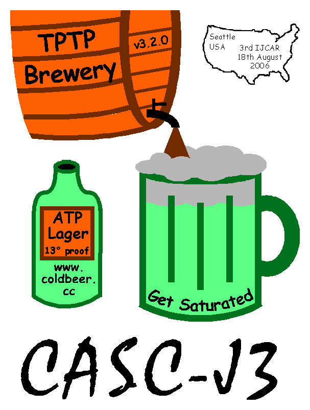

Conclusion
- Fulfilled the main aims and motivations
- Evaluated the relative abilities of cuurrent ATP systems
- Stimulated development of and interest in ATP systems
- Development efforts have received public recognition
- Provided exposure for system builders ...
both within and beyond the community
- Provided an overview of the implementation state of
running, fully automatic, first order ATP systems

- Cooperating Competitions
- Many other successful competitions - SAT, SMT, ASP, Term, CSSC, ...
- Can we have a FLoC (C = Competition)?
- Next year
- New FNT division
- Should EPR stay or go?
- Your Prover (You)